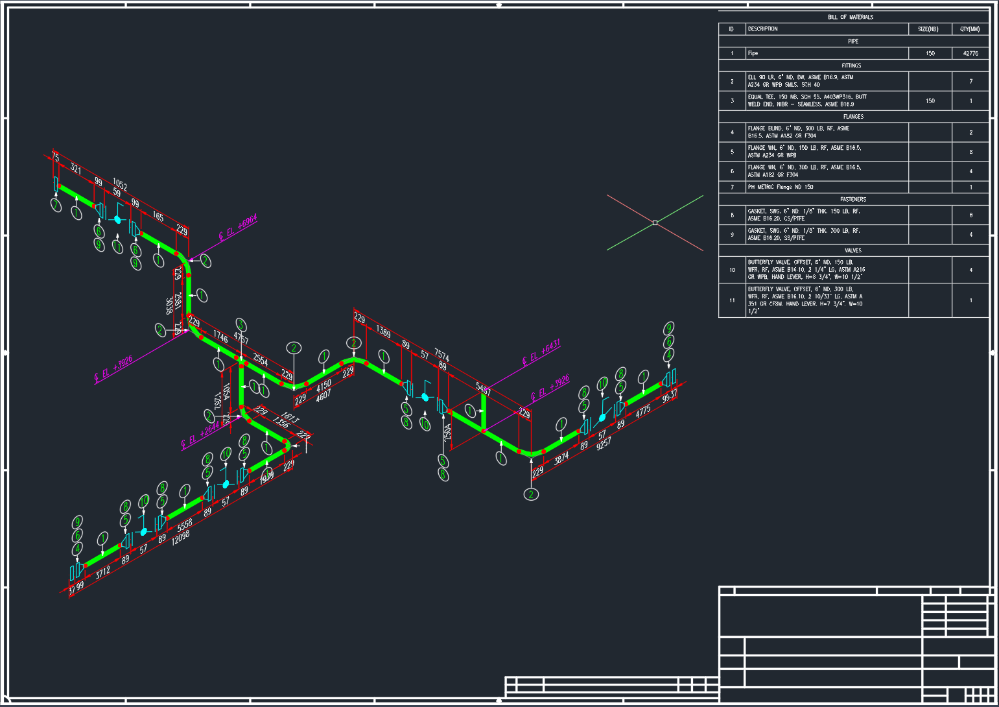
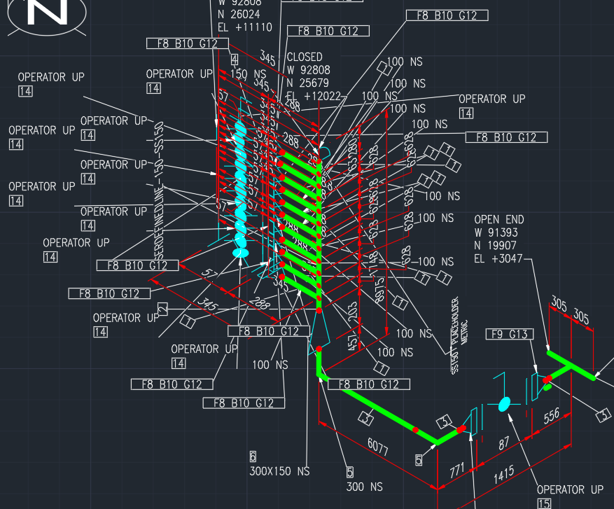
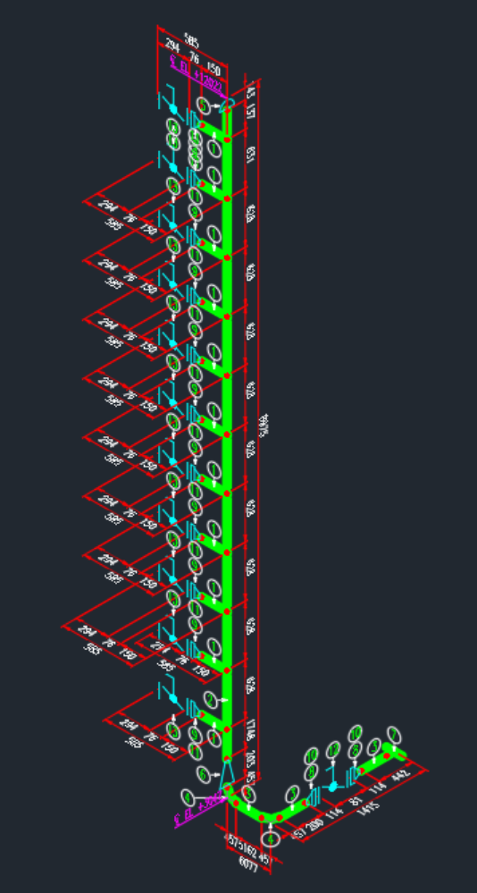
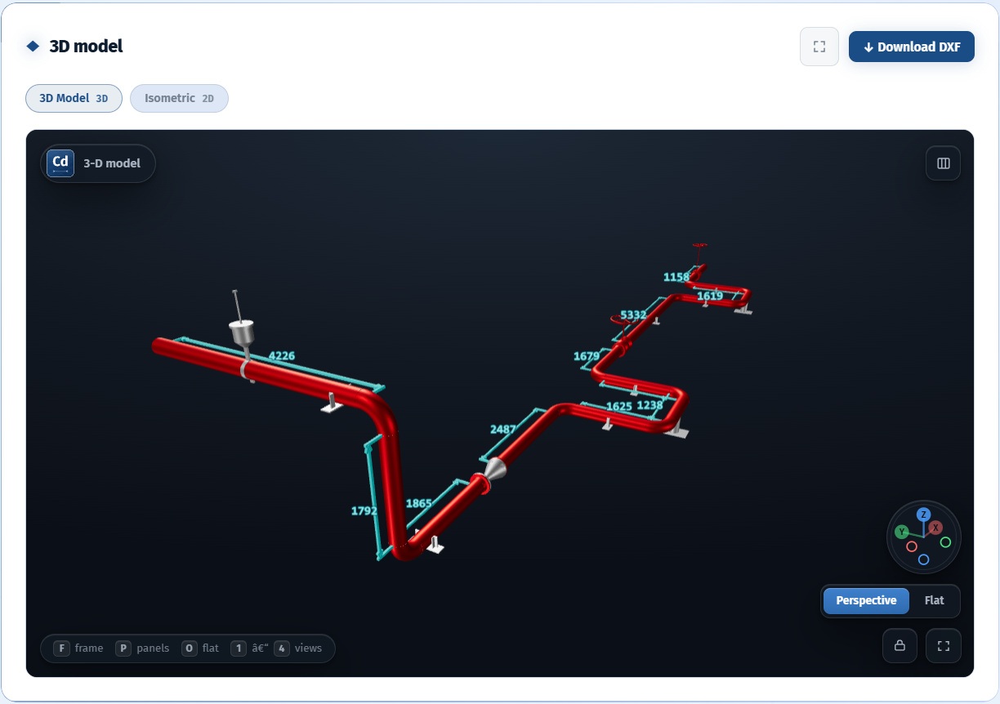

Automated piping isometrics
Stop redrawing
your isometrics.
Cadmium takes your 3D piping model to a finished, annotated isometric on your template, in seconds.

From model to issued sheet
One line, from model to sheet.
A recorded run on a real line, from the plant model to a finished isometric. Drag the model to turn it.
Loading the recorded run…
One sample line of 71 components, 6.6 s end to end. Model detail is simplified for the web.
The problem
Isometric generation is costing you.
Your project requires hundreds of isometrics, and you spend hours of draftsman time on each one — cleaning up the cluttered, bloated mess that comes out of AutoCAD.
- Components colliding with each other.
- Annotations overlapping each other.
- Criss-crossing labels.
- Unwanted information everywhere.
- Completely illegible.

Comparison
The same lines, drawn both ways.
Four production lines. On the left, what AutoCAD produces. On the right, what Cadmium produces from the identical model. Click any drawing to enlarge.


How it works
Open, generate, issue.
Nothing changes about how you model.
Your 3D model
The Plant 3D piping model exactly as you already have it, opened alongside its lines and sheets.
One command
Cadmium works out what connects to what, lays out the line and places every dimension, elevation and balloon.
Engineer review
Changes since the last revision are clouded, and the sheet is checked against the model and the bill of materials.
The sheet
An annotated isometric on your own title block, in native DWG and DXF: real CAD entities, fully editable.
The whole job, start to finish
Open the line, generate the sheet, and export native CAD. The dimensions, elevations, balloons and bill of materials are placed for you.
The 3D model
The model and the sheet,
anywhere, any time.
Every drawing keeps its 3D model beside the generated isometric. View it anywhere, anytime without having an AutoCAD license or a viewer installed.

The arithmetic
The numbers speak for themselves.
See how much your team gets back every month.
Pilot
See it on your own line.
Bring real project data under NDA. We run it with your team, on your templates, so your engineers can judge the output against their own work.
- ScopePick a representative sample with your lead engineer.
- RunWe run it on your template and standards.
- CompareYour team checks the output against the manual result.